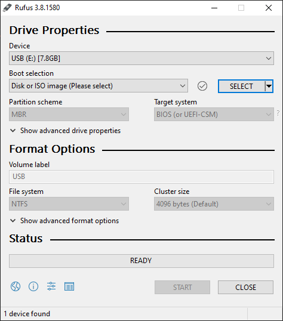
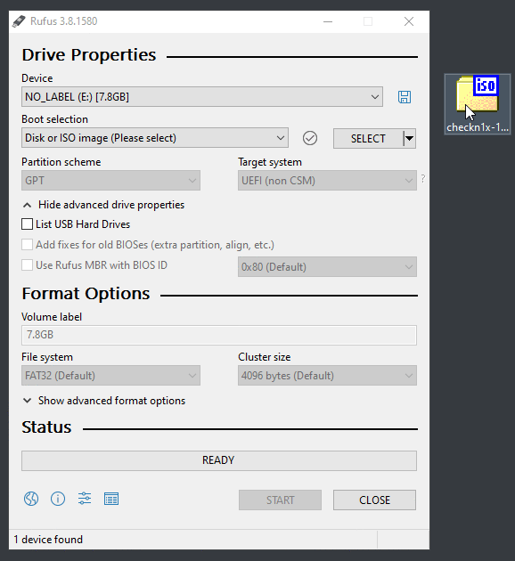
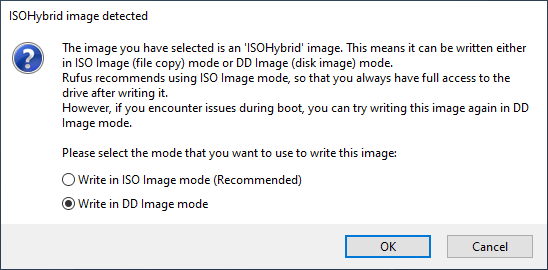
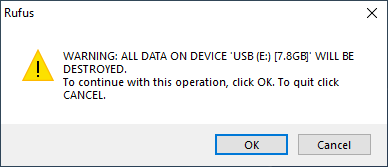
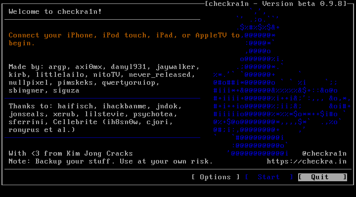

checkn1x is a miniature Linux distribution that allows users to easily jailbreak their devices with checkra1n. Developed by asineth0.
Open Rufus and connect your USB flash drive to your computer.
You should see this screen. Drag the checkn1x ISO file you downloaded earlier onto the Rufus window.
Make sure checkn1x shows up under Boot selection then click start.
When Rufus asks which mode to use, select DD Image mode.
Confirm you are okay with deleting all data on the USB flash drive by clicking OK.
Entering the BIOS is different on every computer. Try pressing the function keys (F1, F2, etc.) or ESC, DEL or Enter immediately after powering on your computer.
Once you are in the BIOS you will need to do two things: disable Secure Boot and set your USB flash drive as the boot priority.
If you aren't sure how to do this search your PC model on Google for instructions.
If your boot order is setup correctly you will load directly into checkra1n!
Use the arrow keys and enter key to navigate. Click Start and follow on the on-screen instructions to enter DFU mode.
Your device will reboot and you can open the checkra1n app on your homescreen and install Cydia.
When you are ready to go back into Windows simply reboot your PC and unplug your USB flash drive.
To update checkra1n simply download a new checkn1x ISO and run Rufus again.